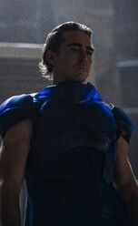

Brother Day
Brother Day es uno de los personajes principales de Foundation. Lee Pace lo interpreta en la serie Apple TV +. A la vez intimidante y más grande que la vida, Brother Day es el último de una larga lista de clones y el actual gobernante Cleon, Emperador de la Galaxia. Es capaz de ser encantador pero también propenso a erupciones volcánicas de ira.
Informacion general
Brother Day es uno de los tres emperadores clon gobernantes del Imperio Galáctico junto con su predecesor inmediato, el hermano Dusk, y el hermano Dawn, su sucesor en espera. [1] Como parte del sistema de la Dinastía Genética diseñado por Cleon I, el Hermano Dawn asciende al trono del medio, convirtiéndose Day en el Emperador gobernante con su mayor para aconsejarle a él y a su menor que entrenar. Cuando Dusk se vuelve demasiado viejo, se convierte en el hermano Darkness y es sacrificado. Brother Day, para entonces un anciano, se convierte en el nuevo Dusk mientras que Dawn asciende al trono del medio como el nuevo Brother Day. Un bebé, el hermano Dawn, se despierta y se lo entrega a Day para que lo críe como si fuera suyo. Como el Cleon principal, el protocolo establece que nunca debe dejar Trantor para garantizar su seguridad.
Brother Day está preocupado por las predicciones hechas por Hari Seldon sobre el destino del Imperio, creyendo que Hari podría ser un revolucionario que intentará desestabilizar el Imperio desde adentro. Sin embargo, Hari no es el único problema de Day. Los planetas de Outer Reach de Anacreon y Thespis están involucrados en una disputa minera sobre un asteroide que resultó en la muerte de varios tasadores imperiales. Day recibe delegaciones de ambos planetas en un esfuerzo por mantener la paz.
Después del ataque terrorista en el Star Bridge, Day decide exiliar a Hari y su Fundación a Terminus. Si las predicciones de la psicohistoria fallan, el proyecto se marchitará. Si las predicciones son precisas, entonces el apoyo imperial garantizará que los éxitos de la Fundación puedan utilizarse para reforzar el régimen del Emperador.
La evidencia sale a la luz de que los bombarderos vinieron tanto de Anacreonte como de Thespis, lo que obligó a Day a interrogar a las delegaciones diplomáticas de cada planeta. A pesar de sus protestas de inocencia y de la creencia de Jerril de que su odio entre ellos más que su odio al Imperio no los llevaría a trabajar juntos, Day decide castigarlos. En una ceremonia pública, Day ejecuta a las delegaciones además de a los embajadores principales y ordena a las naves imperiales bombardear ambos planetas.
Como Brother Day, Cleon XIII supervisó un Imperio acosado por la confusión; el desacuerdo religioso que surge del luminismo, la insurgencia local en Trantor y los planetas del Alcance Exterior que desafían al Imperio. Day creía firmemente que la culpa de esto fueron las acciones impulsivas de su predecesor, Cleon XII, quien permitió que Hari Seldon se exiliara y ordenó el bombardeo de los planetas Anacreon y Thespis. En un intento por estabilizar el Imperio, Day decidió viajar al funeral de Proxima Opal para instalar un sucesor favorito como su reemplazo, rompiendo con el protocolo de que el Cleon principal nunca debería abandonar Trantor.
De los libros de la fundacion
Si bien Brother Day es una creación original para la serie de televisión de la Fundación, tiene una contraparte en la serie de la Fundación: el Emperador Cleon I. El último Emperador Galáctico de la dinastía Entun, Cleon I gobernó desde el planeta Trantor. Cleón I, afable y poco entusiasta por su posición como Emperador, confió en su Jefe de Estado Mayor, Eto Demerzel, para llevar a cabo el día a día de la gestión del Imperio.
Cleon I estaba aislado de su propio Imperio, confinado a los terrenos del Palacio Imperial en Trantor. Finalmente se enteró de Hari Seldon y su nueva ciencia de la psicohistoria y se interesó de inmediato. El Emperador usó las predicciones de Seldon como una herramienta para evitar disturbios dentro del Imperio, y finalmente lo instaló como su nuevo Jefe de Estado Mayor tras la jubilación de Demerzel.